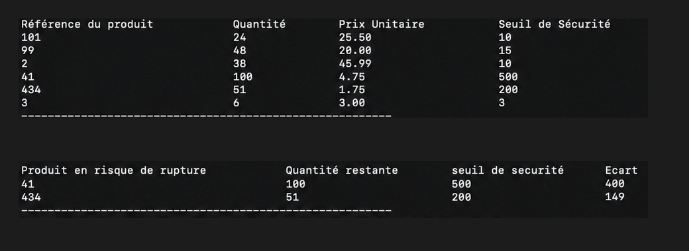

Projet réalisé en binôme, sur un mois, au premier semestre de ma première année de BUT Informatique. Le sujet et les contraintes techniques étaient imposés par l'enseignant, mais la conception et l'organisation du travail étaient entièrement à notre charge : nous avons décidé nous-mêmes du découpage en fonctions, du format de stockage et de la répartition des tâches, avec un point d'étape hebdomadaire avec l'encadrant.
Cette SAÉ mobilise principalement les compétences C1 (Réaliser un développement d'application) et C4 (Gérer des données de l'information).
Concevoir en langage C un outil de gestion de stock permettant de suivre des articles : ajout, suppression, modification, recherche et affichage de l'inventaire. L'attendu portait uniquement sur le programme : aucune interface graphique n'était demandée, l'évaluation reposait sur la justesse de l'algorithmique, la structuration du code et la fiabilité de la persistance des données.
Trois contraintes imposées : C procédural (pas d'objet), interface en ligne de commande, et données persistées dans des fichiers, donc aucune base de données.
J'ai développé un programme structuré autour de structures (struct) représentant les articles : référence, libellé, quantité et prix. J'ai implémenté les fonctions principales du menu : ajout d'un article, retrait de stock, mise à jour des quantités, recherche par nom ou par référence, et affichage trié de l'inventaire. J'ai également géré la sauvegarde et le chargement des données dans un fichier, ainsi que le contrôle des saisies utilisateur et la gestion des cas d'erreur.
La principale difficulté a été la gestion de la mémoire et des chaînes de caractères en C, ainsi que la lecture et l'écriture fiables dans les fichiers. J'ai appris à découper mon code en fonctions claires, à tester chaque module séparément et à anticiper les saisies invalides. Ce projet m'a fait progresser sur la rigueur algorithmique et la manipulation des structures de données.
Le livrable est un programme fonctionnel en C, accompagné de son code source commenté et d'un jeu de tests. L'outil permet de gérer un inventaire complet du début à la fin d'une session, avec persistance des données dans un fichier. Ce dont je suis le plus fier : avoir livré un programme stable, lisible et réutilisable, ma première vraie application concrète de mes bases en C.